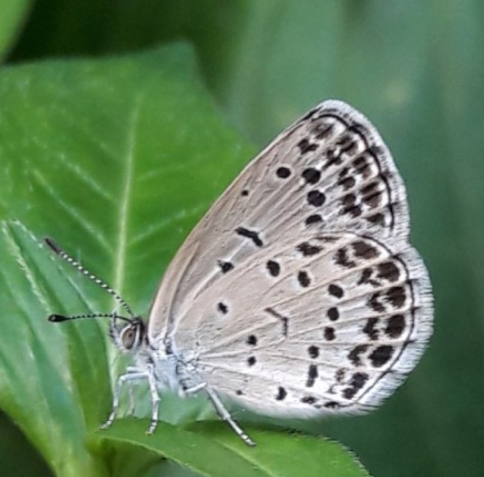
이름: 남방부전나비
설명: 남방부전나비는 나비목 부전나비과의 곤충이다.
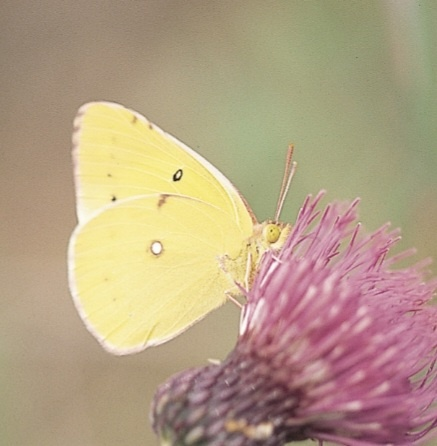
이름: 노랑나비
설명: 노랑나비(Colias erate)는 흰나비과의 한 종류이다.

이름: 먹부전나비
설명: 먹부전나비(Tongeia fischeri)는 부전나비과의 한 종류이다.
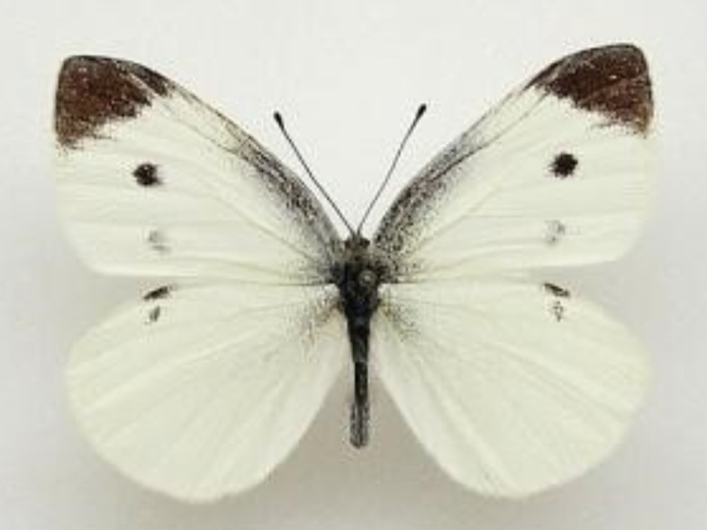
이름: 배추흰나비
설명: 배추흰나비(학명: Pieris rapae)는 흰나비과에 속하는
백색 소형 나비의 일종으로서, 작은흰나비라고도 한다.
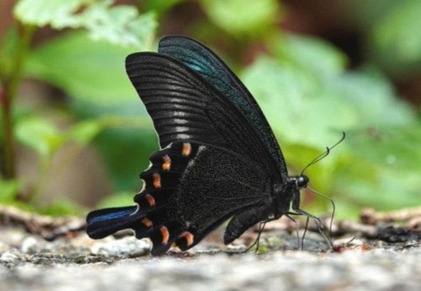
이름: 산제비나비
설명: 산제비나비(학명 : Papilio maackii)는 호랑나비과의 한 종류이다.
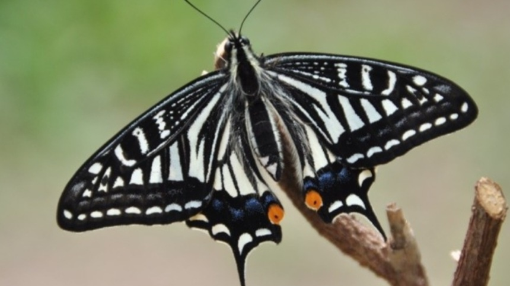
이름: 산호랑나비
설명: 산호랑나비(학명: Papilio machaon)는 호랑나비과 호랑나비속에 속하는 나비의 일종이다.
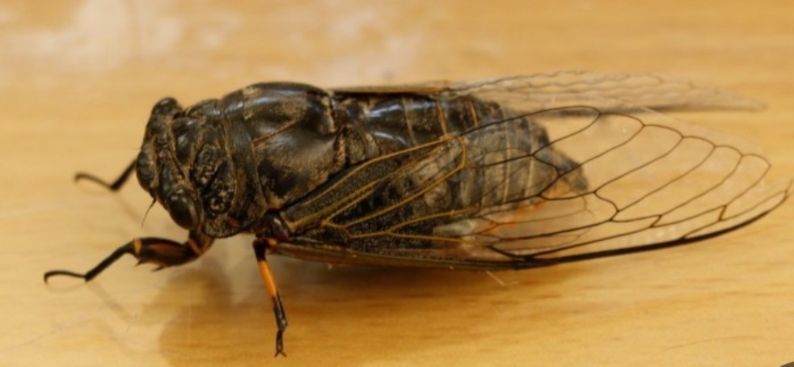
이름: 말매미
설명: 말매미(Cryptotympana atrata)는 곤충강 노린재목 매미아목 매미과의 곤충이다.
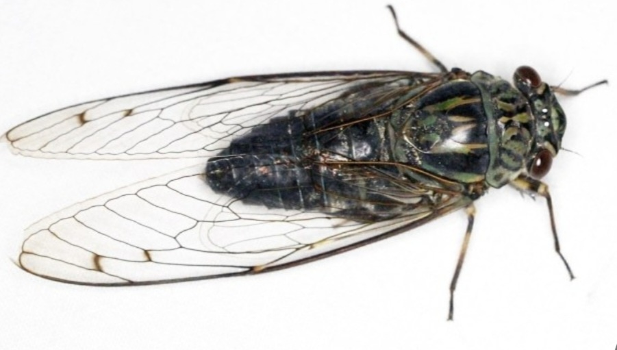
이름: 애매미
설명: 애매미(Meimuna opalifera)는 곤충강 노린재목 매미과에 속한다.
한반도와 일본, 중화인민공화국, 중화민국에 걸쳐 동북아시아에 널리 분포한다.
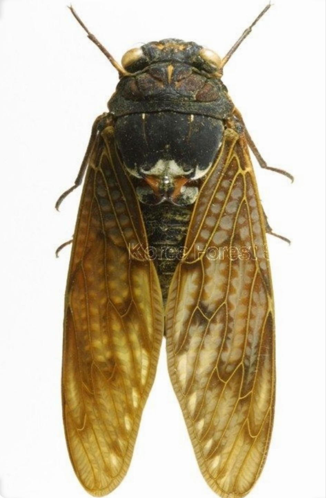
이름: 유지매미
설명: 유지매미(油脂-, 문화어: 기름매미)는 곤충강 노린재목 매미과의 곤충이다.
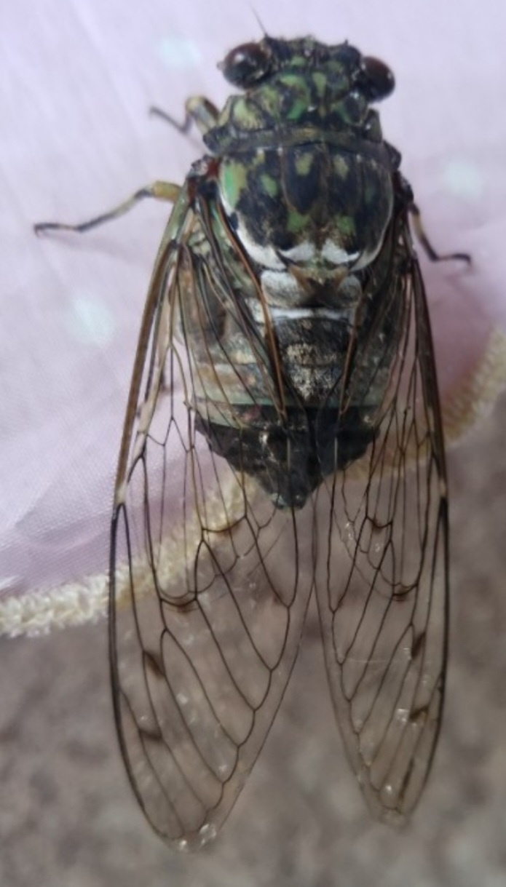
이름: 참매미
설명: 참매미(Hyalessa maculaticollis)는 곤충강 노린재목 매미과에 속한다.
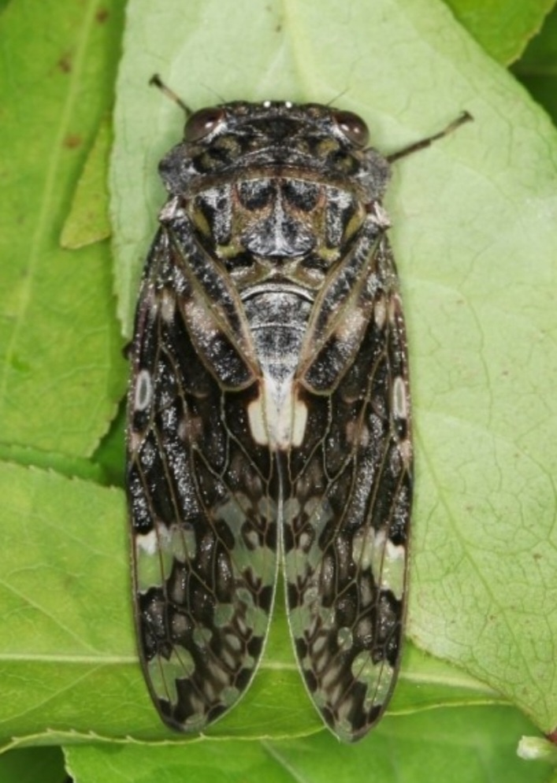
이름: 털매미
설명: 털매미(학명: Platypleura kaempferi)는 매미과의 곤충이다.
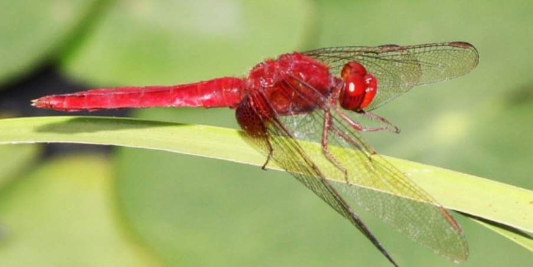
이름: 고추잠자리
설명: 고추잠자리(Crocothemis servilia)는
동아시아·동남아시아·플로리다 반도·하와이 등에 분포하는 잠자리의 한 종이다.
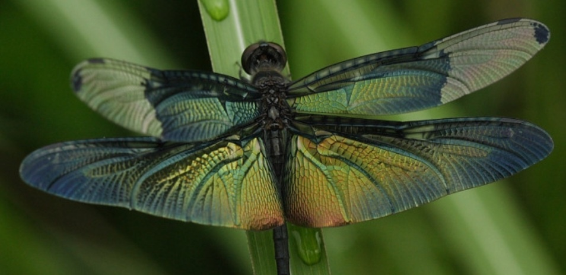
이름: 나비잠자리
설명: 나비잠자리는 잠자리과의 한 종이다.
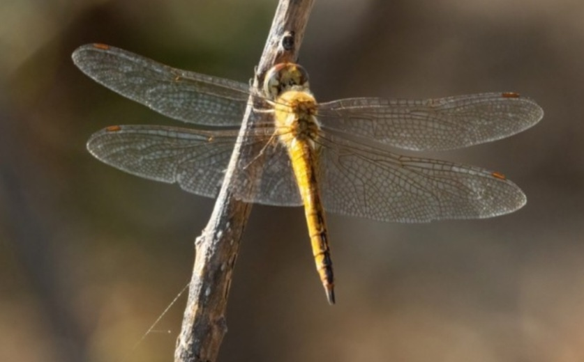
이름: 된장잠자리
설명: 된장잠자리(globe skimmer, wandering glider, Pantala flavescens)는
잠자리과에 속하는 곤충이다.
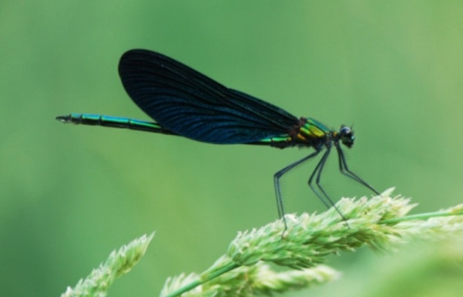
이름: 물잠자리
설명: 물잠자리(Calopteryx japonica)는 실잠자리아목에 속하는 곤충이다.
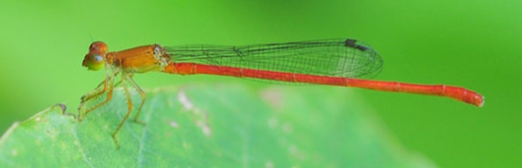
이름: 연분홍실잠자리
설명: 자연성이 유지되는 깊지 않은 하천에 사는데, 흐름이 매우 약한 곳이나 주변 논에서도 보인다.
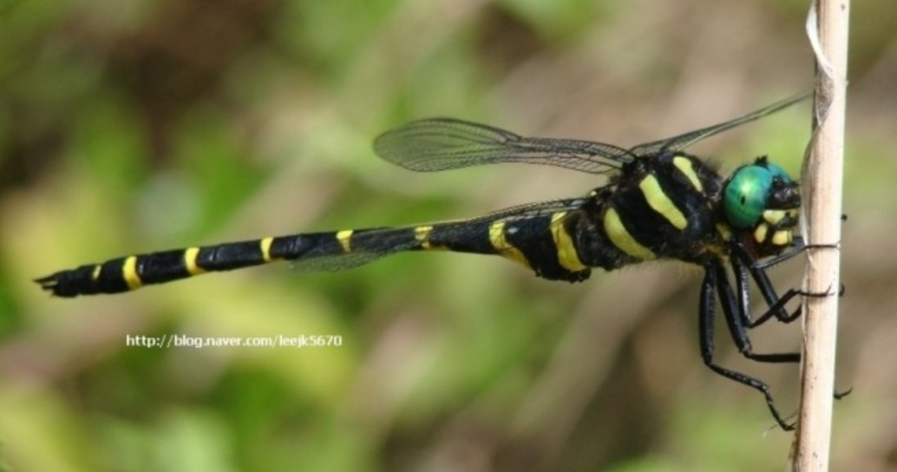
이름: 장수잠자리
설명: 장수잠자리는 잠자리목 장수잠자리과의 곤충으로 한국, 일본, 중국 등 아시아에 분포한다.
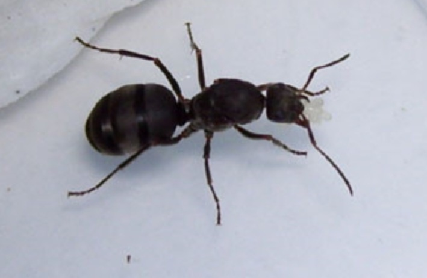
이름: 곰개미
설명: 곰개미(Formica japonica)는 곤충강 벌목 개미과 불개미아과 불개미속에 속한다.
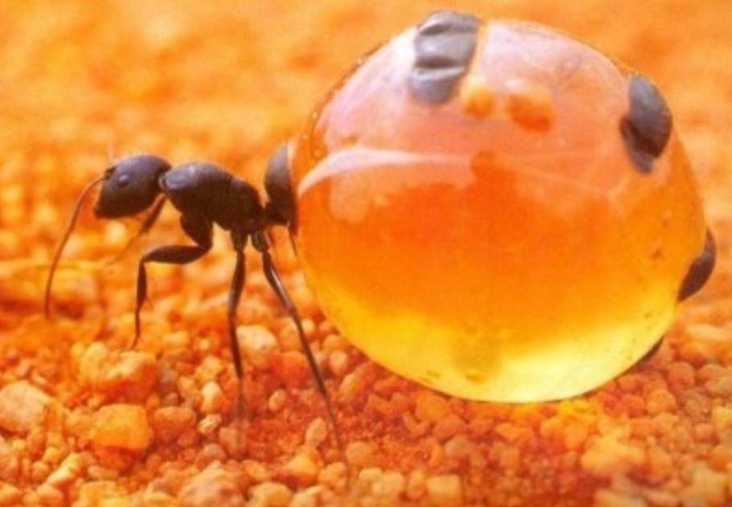
이름: 꿀단지개미
설명: 꿀개미Honey ants라고도 불리는 꿀단지개미Honeypot ants는
다른 일개미들한테 액상형의 먹이를 복부가 크게 부풀어오를 정도로 받아먹는
전문화된 일개미들(repletes,[1] plerergates, rotunds)이 있는 개미들이다.
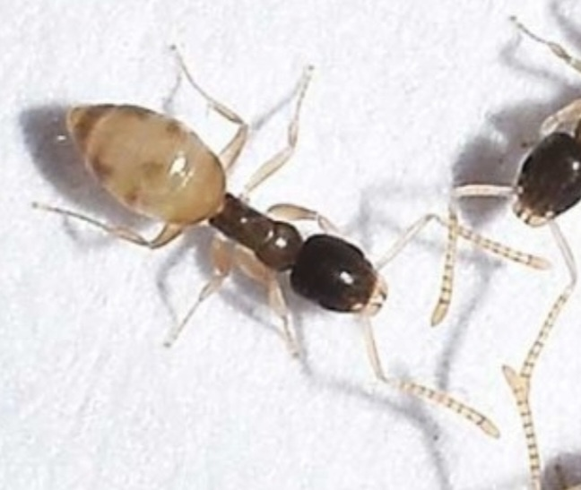
이름: 유령개미
설명: 우리나라에서 몇 안 되는 가주성 개미[2]중 하나로
원래는 플로리다에서 서식하던 종이지만 농수산물등에 딸려 한국으로 유입된 것으로 추측된다.
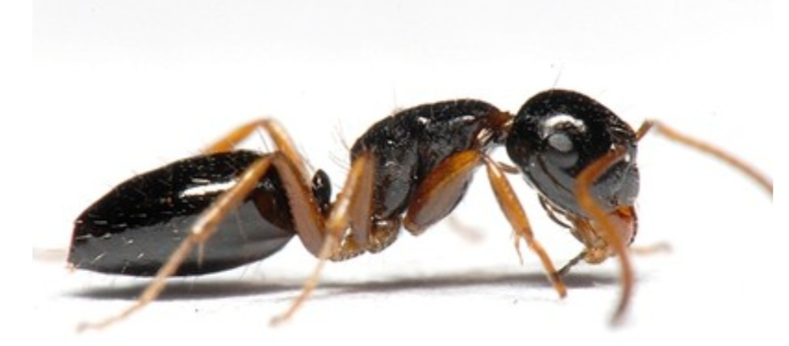
이름: 이토왕개미
설명: 이토왕개미는 우리나라에 서식하는 왕개미속 개미이다.
출처: 위키백과